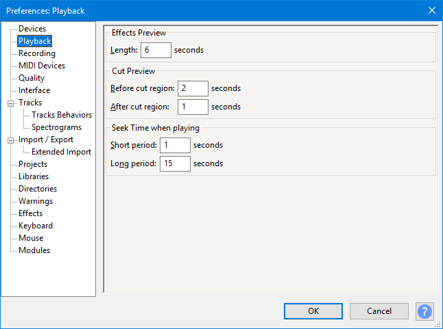

Playback Preferences
From Audacity Development Manual
- Accessed by: (on a Mac )
- 
- Playback Preferences.
Effects Preview
- Length: The length of audio to be played when previewing an effect, in seconds. Playback begins from the start of the selection region, and stops after the preview length has elapsed, or at the end of the selection region if that is shorter than the preview length.
Cut Preview
These preferences apply when using the "Play Cut Preview" shortcut (C by default) to play a length of audio before and after a selection region. This is useful to hear what a cut would sound like before making the cut.
- Before cut region: How much audio to play before the region.
- After cut region: How much audio to play after the region.
Seek Time when playing
- Short period: The time interval the playback cursor skips backwards or forwards when you press the ← (left arrow) or → (right arrow) shortcuts respectively. The shortcuts , or . respectively can be used instead for short skip backwards or forwards.
- Long period: The time interval the playback cursor skips backwards or forwards when you press Shift + ← (shift and left arrow) or Shift + → (shift and right arrow) respectively. Holding Shift with , or . respectively can be used instead for long skip backwards or forwards.
These two values also control the Cursor Long Jump and Cursor Short Jump commands when playback is stopped. The shortcuts , (comma) or . (period) jump the cursor backwards or forwards respectively by the Short Period interval; Shift + , or Shift + . jump the cursor backwards or forwards by the Long Period interval.